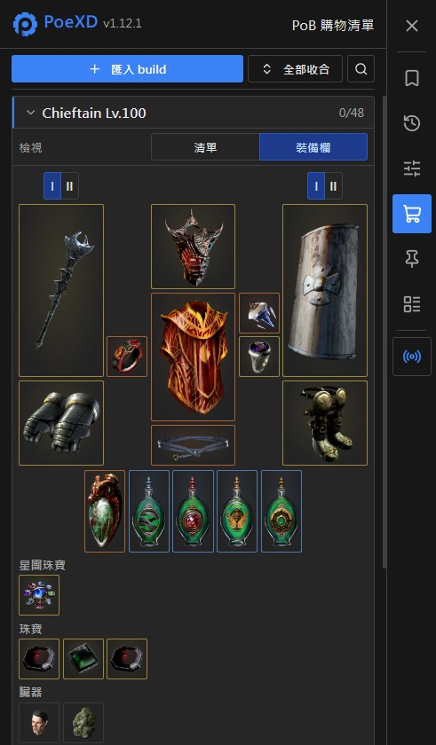
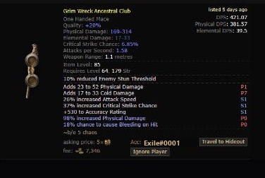

安裝
| 瀏覽器 | 安裝方式 |
|---|---|
| Chrome、Brave 等 Chromium 瀏覽器 | Chrome 線上應用程式商店，按「加到 Chrome」 |
| Microsoft Edge | Edge 附加元件，按「取得」 |
| 手動安裝（不會自動更新） | 見下方步驟 |
商店版會自動更新，建議優先使用。Firefox 目前不提供。
手動安裝
- 到 GitHub Releases 下載最新版的
chromium.zip，解壓縮到一個固定的資料夾（之後不要刪掉或搬移）。 - 在網址列輸入
chrome://extensions/（Edge 為edge://extensions/），打開右上角的「開發人員模式」。 - 按「載入未封裝項目」，選擇剛才解壓縮的資料夾。
手動安裝版不會自動更新，有新版本時需要重新下載並覆蓋資料夾，再到擴充功能頁按重新載入。
第一次使用
- 開啟 官方交易網站（台服、國服也支援），頁面左側會出現 PoeXD 側邊工具列（可在設定的「面板位置」改到右側）；縮起時只會留下一個 PoeXD 標誌。
- 工具列的分頁分別是書籤、歷史紀錄、常用詞綴群組、PoB 購物清單等功能；點分頁即可切換。
- 點瀏覽器右上角的 PoeXD 圖示，可以個別開關各項功能模組（T 階快捷按鈕、詞綴選擇器、價格換算、市集漢化⋯）。


線上搜尋主控台
在單一分頁集中監聽多組即時搜尋（Live Search），斷線自動重連，有新物品上架時會即時出現並可播放提示音。
- 開啟線上搜尋主控台，可以「從書籤挑選」要監聽的搜尋，或「輸入搜尋網址」直接貼上交易網站的搜尋連結。
- 連線會依書籤資料夾分組，可以批次啟用或停止；點單一連線可以只看那組的結果。
- 主控台會即時顯示官方 API 的速率狀態，避免監聽太多組而被暫時限制。
- 關掉瀏覽器再打開時，可以恢復上次的連線。

主控台分頁需要保持開啟才會持續監聽。PoeXD 已避免該分頁被瀏覽器自動捨棄，但電腦休眠時連線仍會中斷，喚醒後會自動重連。
常用詞綴群組與搜尋預覽
把常用條件（例如「生命 ＋ 總元素抗性」）存成群組，之後直接疊加到目前的搜尋，不會覆蓋你已經設定好的其他篩選。
建立與套用群組
- 在工具列打開「常用詞綴群組」，新增一個群組並加入想要的詞綴與數值。
- 在任何搜尋頁面點群組即可疊加到目前的篩選；套錯了可以一鍵復原。
- 群組可以用分享碼或備份檔匯入、匯出，方便和朋友交換或換電腦。

搜尋預覽
點書籤或歷史紀錄的名稱會先打開搜尋預覽（名稱旁的箭頭才是直接開啟搜尋），可以看到它背後的實際條件，在預覽視窗中微調詞綴，或只把其中幾條詞綴疊加到目前的搜尋。

詞綴篩選與 T 階
詞綴選擇器
- 在官方篩選群組旁打開詞綴選擇器，選擇物品類別，並可用「物等」區間篩選。
- 依前綴／後綴瀏覽可出現的詞綴，勾選想要的項目加入「待套用清單」。
- 確認後一次寫入官方篩選器，不用一條一條手動搜尋。
T 階快捷按鈕
篩選欄旁的 T 階按鈕可以直接選階級，自動填入該階級的數值範圍；同一個詞綴在該物品類別有多種來源時，可以在左側切換詞綴分組。詞綴也可以拖曳排序，或移到其他篩選群組。PoE 2 的碑牌、換界石與範圍珠寶同樣支援。


搜尋結果強化
| 功能 | 說明 |
|---|---|
| 價格換算與排序 | 依 poe.ninja 匯率換算不同通貨的標價，並可依換算後價格排序（僅國際服）。 |
| 結果詞綴高亮 | 標示出符合你篩選條件的詞綴。 |
| 結果詞綴快篩 | 滑鼠移到結果中的詞綴，右側出現「+和／+不」按鈕，可快速加入篩選（只帶入詞綴，不會自動搜尋）。 |
| 複製 PoB 物品文字 | 滑鼠移到結果上，左上角的 PoB 按鈕可一鍵複製英文物品文字，直接貼進 Path of Building；台服與國服頁面會自動轉成英文。 |
| PoEDB 連結 | 滑鼠移到結果上，左上角的 DB 按鈕可開啟該物品的 PoEDB 頁面。 |
| 符文覆寫試算（PoE 2） | 試算符文覆寫後的 DPS／防禦，並可依試算結果排序。 |

PoB 購物清單
- 在工具列打開「PoB 購物清單」，貼上 Path of Building 的匯出代碼，或
poe.ninja、pobb.in、pastebin的分享網址。 - 清單會依裝備欄位與寶石整理，可同時保留多份 build；build 有多組裝備套裝或技能組時，可從上方選單切換。
- 在彈出預覽微調條件後，一鍵搜尋、加入書籤，或送進線上搜尋主控台。
從 pobb.in、pastebin 匯入需要另外授權存取該網站。代碼只存在你的瀏覽器，不會上傳。開啟市集漢化並授權 pobb.in 後，pobb.in 分享頁也會自動顯示中文。


書籤與歷史紀錄
- 用樹狀資料夾收納搜尋，支援拖曳排序、封面圖與滑過預覽。
- 目前頁面對應的書籤會被高亮；也可以用目前的搜尋覆蓋既有書籤。
- 書籤會自動套用目前的伺服器與聯盟，換季不用重建。
- 每次搜尋都會自動記錄在歷史紀錄中。
- 可以與 TFT Trade Extension 互相匯入、匯出書籤，匯入前會先預覽差異。

市集漢化
把國際服英文市集的介面、篩選器與搜尋結果顯示成中文。只改變顯示，不影響搜尋內容。
- 在 PoeXD 設定中把「語言」設為繁體中文（採台服用語）或簡體中文（採國服用語）。
- 打開「市集漢化」（設定頁或點瀏覽器右上角的 PoeXD 圖示都可以）。
- 想同時看到英文原文，可以再打開「中英並列」：詞綴、通貨與物品下拉選單會中英並列，中英文都搜得到。
- 重新整理交易頁面後即會套用。


設定與快捷鍵
- 主題、工具列位置、寬度與介面縮放都可以調整。
- 道具名稱與篩選欄支援模糊搜尋（自動加上
~）。 - 可自訂聚焦／清除搜尋欄的快捷鍵：在設定中點快捷鍵欄位後按下想要的按鍵，Backspace 清除、Esc 取消。
- 分頁標題可以換成目前搜尋的道具名稱，開很多分頁時比較好找。
- 介面提供繁體中文、簡體中文與英文。

常見問題
我的資料會被上傳嗎？
不會。PoeXD 沒有伺服器，也沒有分析或追蹤程式碼，所有資料都存在你的瀏覽器本機。詳見隱私權政策。
為什麼價格換算沒有出現？
價格資料來自 poe.ninja，只提供國際服；台服與國服目前不支援價格換算。
工具列沒有出現怎麼辦？
確認目前是官方交易網站，並在擴充功能頁確認 PoeXD 已啟用，然後重新整理頁面。仍然沒有出現的話，歡迎到 GitHub 回報。
哪裡可以看到更新內容、回報問題？
更新內容在 Releases；問題與建議請開 Issue，安全性問題請依 SECURITY.md 私下回報。
覺得好用？
PoeXD 免費且開源，歡迎贊助支持後續開發。